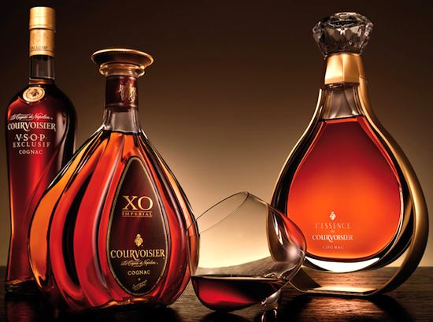
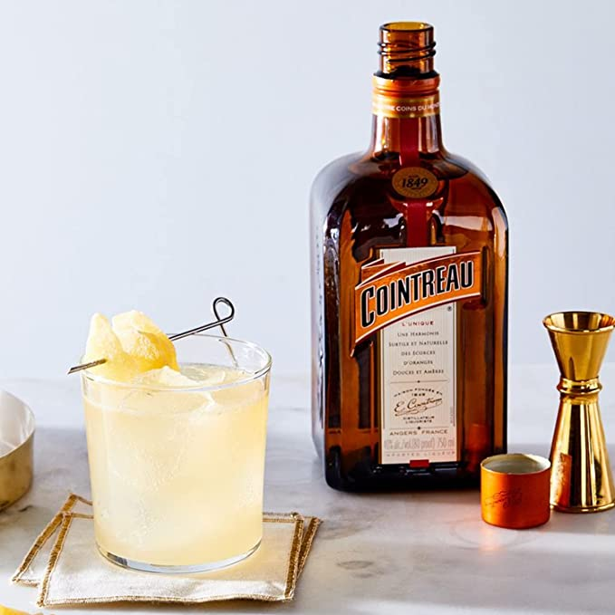
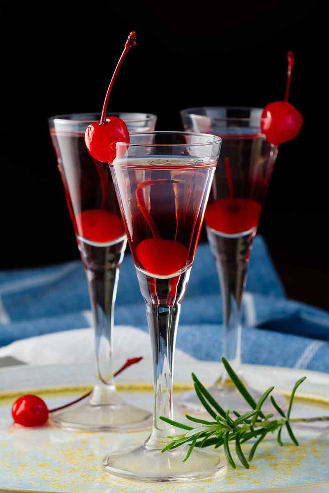
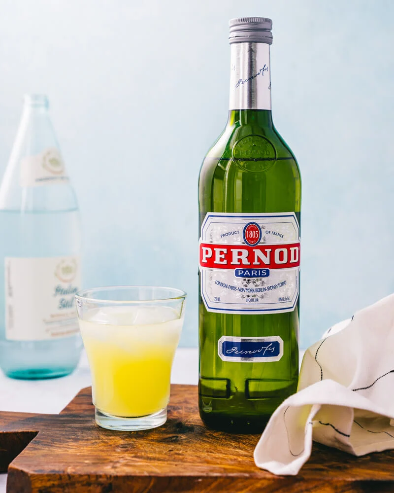
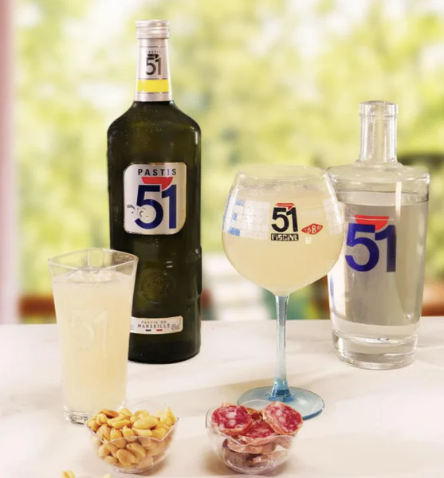
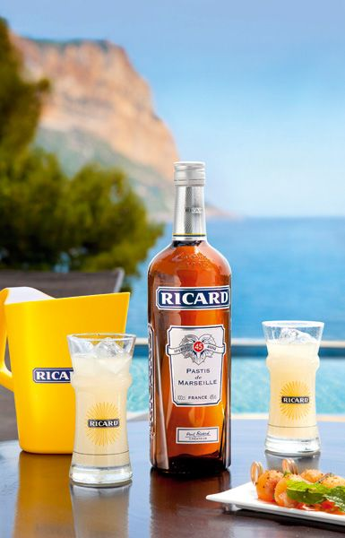

Drinks

cognac

Cointreau

Kirsch

Pernod Paris

Pastis 51

Ricard
cognac
It is made from white grapes that are grown in the region and distilled twice using traditional copper pot stills.
Servings: 5 Servings
Php 2,548
Cointreau
Cointreau is a French orange liqueur that is made from sweet and bitter orange peels that are distilled with alcohol, sugar, and water.
Servings: 5 Servings
Php 1,789
Kirsch
Kirsch is made by distilling fermented cherry juice or crushed cherries, resulting in a high-proof spirit that is often aged in oak barrels for several years to achieve a smooth and complex flavor.
Servings: 5 Servings
Php 1,659
Pernod Paris
It is made with a proprietary blend of herbs and spices, including anise, fennel, and wormwood.
Servings: 5 Servings
Php 1,679
Pastis 51
Pastis 51 is a French anise-flavored liqueur that is often served as an aperitif. It was first created in 1951 by Paul Ricard and is made from a proprietary blend of anise, licorice, and other herbs and spices that are macerated in alcohol and then distilled.
Servings: 5 Servings
Php 1,789
ricard
Ricard is a popular brand of French pastis, which is an anise-flavored liqueur that is often served as an aperitif.
Servings: 5 Servings
Php 1,999